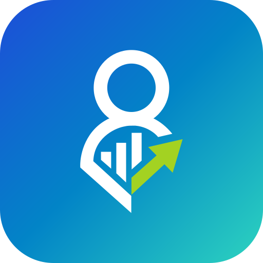

✅ Diseño Squircle Oficial (Imagen 2)
¡Diseño Elegante Restaurado!
El icono ahora tiene esquinas redondeadas suaves y proporciones equilibradas con aire alrededor del isotipo. Se ve infinitamente mejor en las pestañas del navegador.

Vectorial (SVG)
Google (48x48)
Móvil / PWA
👉 En la pestaña del navegador: Puedes ver arriba el icono con sus esquinas curvas y su aspecto premium.